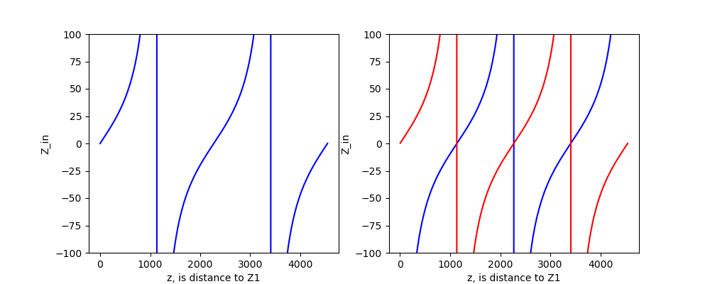

05全反射阻抗变换¶
当 \(|\Gamma|=|\frac{Z_1-Z_0}{Z_1+Z_0}|=1\) 时，发生全反射，形成纯驻波。有以下三种情况：
\(\Gamma=-1\Rightarrow Z_1=0\)，对应终端短路，无负载。
利用 [[03阻抗变换特性]]输入阻抗公式 \((2.2)\) 可得
\[ Z_{in}=Z_0\frac{Z_1+jZ_0\tan{\beta z}}{Z_0+jZ_1\tan{\beta z}}=jZ_0\tan{\beta z} \]! 注意，此时计算仍是无损耗情况，考虑衰减常数 \(\alpha\) 并不会对相位造成影响，但会让计算变得很复杂。
并且会发现 \((Z_1-Z_0)/(Z_1+Z_0)=A_2/A_1=-1\) ，也就是说此时终端处 \(u^-=-u^+\) ，说明入射波和反射波电压差一个 \(\pi\) 的相位；相反，电流相等。
\(\Gamma=1\Rightarrow Z_1\rightarrow\infty\)，对应终端开路，负载无穷大。
同样把 \(Z_1\) 带入输入阻抗 \(Z_{in}\) 得到
\[ Z_{in}=-j\frac{Z_0}{\tan{\beta z}} \]此时 \((Z_1-Z_0)/(Z_1+Z_0)=A_2/A_1=1\) ，终端处 \(u^-=u^+\) ，说明入射波和反射波电压相等，但电流将差一个 \(\pi\) 的相位。
负载为纯电抗（虚数） \(Z_1=jZ_x\) ， \(|\Gamma|=|\frac{jZ_x-Z_0}{jZ_x+Z_0}|=1\)。
分析，略。
和有负载的情况一样，\(Z_{in}\) 以 \(\lambda/2\) 为周期变化，同时每经过 \(\lambda/4\) 阻抗特性也发生变换，前两种情况曲线如下。
计算短路阻抗: 6.9596700945357775
计算开路阻抗: -359.2124290435572
